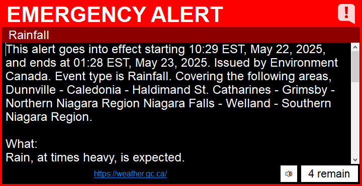
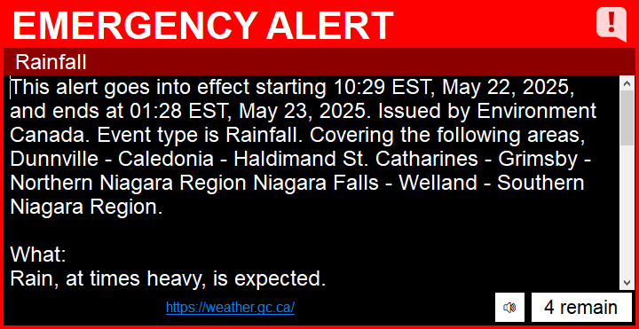
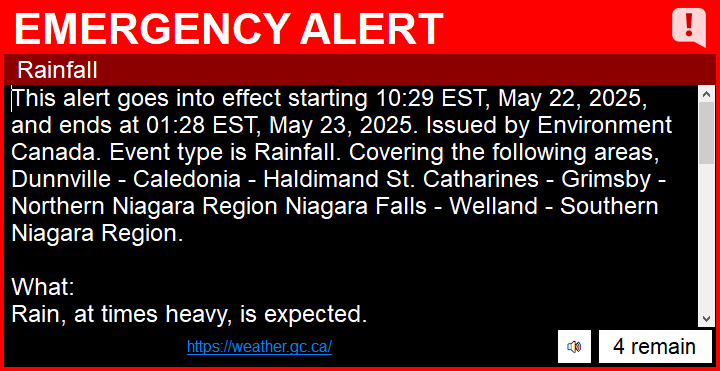

Download v8.0 Installer
Download v8.0 Standalone
 

SharpAlert needs .NET Framework 4.8 installed to work correctly. Download and install the framework before running SharpAlert! (Especially for users on Windows 8.1 and below)
Download .NET Framework 4.8

Now with alerts from Canada and Mexico!
SharpAlert works day and night, to alert and protect. It can be used in the home, on public displays, TV stations, and much more.
Simplifying a bit, SharpAlert works closely to how Wireless Emergency Alerts would work on a device like your phone, or more closely to the Emergency Alert System on a TV or radio station broadcast.
In the background, SharpAlert constantly polls for new alerts. When an alert is received, the program checks it against your preferences. If the alert is allowed to relay,
a visual and auditory message plays. It tells you the event type, and information about the alert.
You can play TTS (Text-To-Speech) or embedded audio (included within some alerts) by clicking the play button.
TTS or embedded audio will be played automatically if you have SharpAlert in full screen mode.
SharpAlert can receive alert information from IPAWS, NAADS, and SASMEX. It cannot receive alerts directly from the National Weather Service. It can only receive them if they are issued via IPAWS Wireless Emergency Alerts.
Alert sounds can be customized within SharpAlert.
Emergency Alert
Alert Closing (disabled by default)
Have questions, or want to interact with the community? Join the EAS Culture Discord server!

Older Versions (out of support)
Download v7.27Download v7.0
Download v6.0
Download v5.0
Download v4.1
Download v4.0
Download v3.0
Download v2.0
Download v1.0
Download v0.2
Download v0.1